Authors: Austin Tudor David Andrews, Liam Wilkinson, Jamie Heagerty, Harry Coppock, Jakob Nicolaus Foerster, Rui Ponte Costa · ETH, MIT, Oxford, University of Bath
Published: 2026-09-02 · Category: cs.AI
Citation: arXiv:2609.02459v1 · PDF · abstract page
CivBench: Agents Fail to Execute 54% of Stated Strategic Plans in Long-Horizon Tasks
1. What It Is & Why It Matters
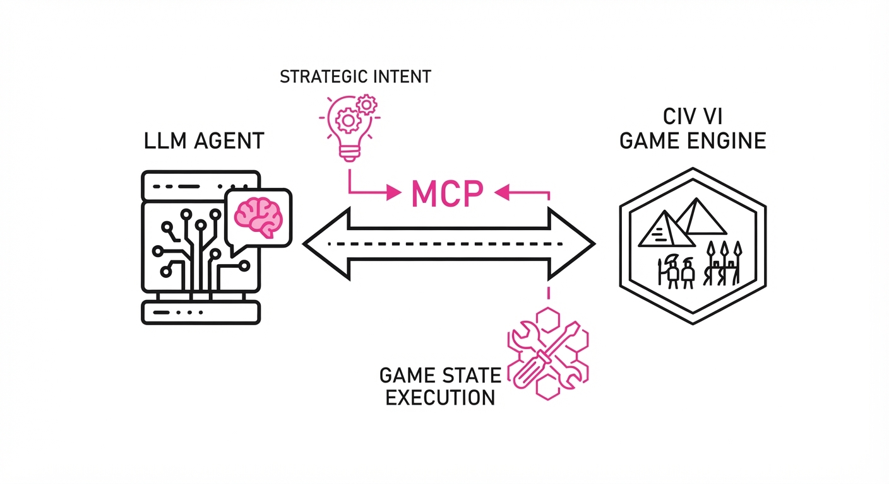
CivBench is an open-source evaluation framework designed to stress-test Large Language Model (LLM) agents in Civilization VI, an environment characterized by deep state complexity and long-horizon decision-making. Unlike standard benchmarks (e.g., MMLU or HumanEval) that focus on single-turn reasoning, CivBench forces agents to manage thousands of tool calls over 300+ simulated turns. By utilizing the Model Context Protocol (MCP), CivBench provides a standardized interface for agents to query game state, execute tactical maneuvers, and manage long-term resource allocation.
The core challenge CivBench uncovers is "long-horizon maintenance." In real-world enterprise applications, agents are rarely asked to solve a single problem; they are asked to manage a persistent system—like a server cluster or a supply chain—where the agent must monitor for drift, update its internal model, and execute corrective actions. The benchmark exposes 76 distinct MCP tools and a specialized narration layer that converts raw, high-dimensional visual game data into structured, actionable text.
- The Problem: Current agent benchmarks are ephemeral. They measure an agent's ability to "solve" a prompt, but they ignore the "drift" that happens when agents lose track of long-term objectives amidst the noise of daily tool execution.
- The Core Idea: Use the high-fidelity complexity of a strategy game to quantify "Proactive Monitoring Rate" (PMR) and "RAG@10" (the alignment between stated intent and actual execution).
- Headline Result: Even with explicit playbook guidance, agents fail to execute their own stated plans within a 10-turn window (RAG@10) between 34.2% and 51.8% of the time. This reveals a "Cognitive Disconnect": the agent is perfectly capable of writing a brilliant plan but lacks the executive function to follow through.
🏭 Industry Angle: Enterprise automation teams building autonomous agents for complex supply chain, DevOps, or project management platforms will find this critical. These systems require persistent state-monitoring; if an agent cannot remember to check a server’s load metrics over a 48-hour window, it is not an autonomous worker—it is a liability.
2. How It Works
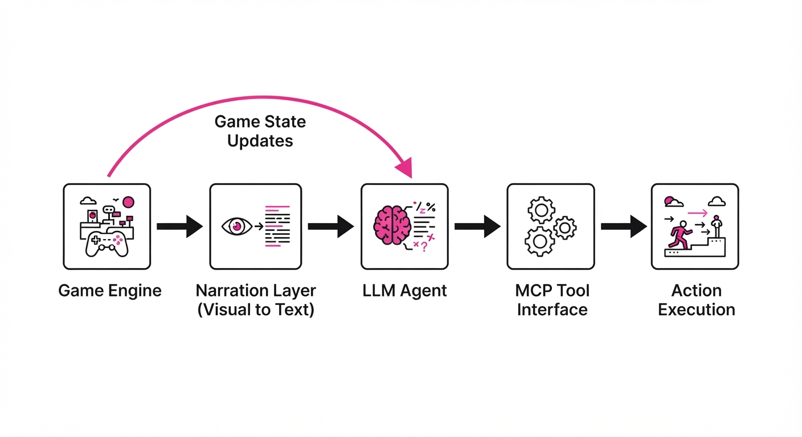
CivBench operates as a closed-loop simulation environment that forces the agent to balance reactive gameplay with proactive strategic planning.
- MCP Integration: The Model Context Protocol (MCP) serves as the "nervous system," providing a standardized, plug-and-play interface between the LLM and the game engine. This removes the "API-glue" overhead, allowing research to focus solely on agent behavior.
- Narration Layer: Raw visual grids are parsed into structured JSON-like text. This layer acts as a "sensory organ," summarizing unit positions, resource yields, and enemy proximity, effectively simulating a dashboard.
- Action Space: Agents are granted access to 76 discrete MCP tools, including
research_techmove_unitquery_victory_status, andmanage_city_production. - Playbook Protocol: This is a structured prompt framework. At the start of each segment, the agent must write a "Planning Reflection." This forces the agent to commit its intent to the context window, which is then used as the benchmark for subsequent evaluation.
- Evaluation Metrics: CivBench logs every action and compares it against the "Planning Reflection." It specifically measures the temporal gap between intent (what the agent said it would do) and action (the actual tool call).
- Long-Horizon Scaling: Environments are constrained to 300+ turns. This forces the agent to manage state persistence across thousands of tokens of history, testing its ability to prune irrelevant information while retaining core strategic goals.
# Pseudocode: Measuring RAG@10 (Plan-Action Alignment)
def evaluate_alignment(plan_log, execution_log):
# RAG@10 measures if an agent executes a planned task within 10 turns
for plan in plan_log:
deadline = plan.turn + 10
# Search for the tool call that matches the plan's intent
was_executed = any(
exec.action == plan.target
for exec in execution_log
if plan.turn < exec.turn <= deadline
)
if not was_executed:
return "Failure: Plan abandoned"
return "Success: Plan maintained"3. Core Idea & Key Numbers
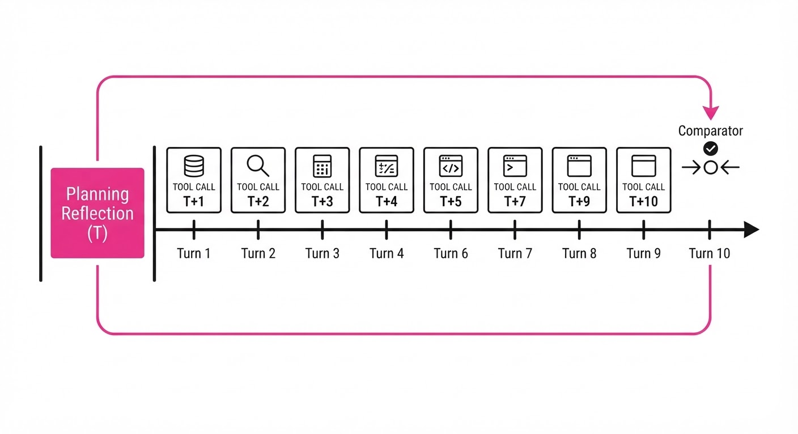
The mechanism relies on Reflective Alignment. We force the agent to manifest its intent in the context window. We then treat that text as a "contract" that the agent must fulfill.
💡 Intuition: Think of this as a "To-Do List" audit. If an agent writes, "I must check my gold reserves to ensure I can afford an upgrade," but never calls the get_gold tool within the next 10 turns, it has suffered a "commitment failure." It isn't that the agent lacks the ability to check; it lacks the executive priority to remember the task.
🔍 Example: An agent writes: "I will check victory progress on turn 50" (Plan). If the turn count reaches 61 and the query_victory tool was never called, the RAG@10 metric for that specific plan is 0. The agent has effectively "forgotten" its own strategic directive.
4. Analogy
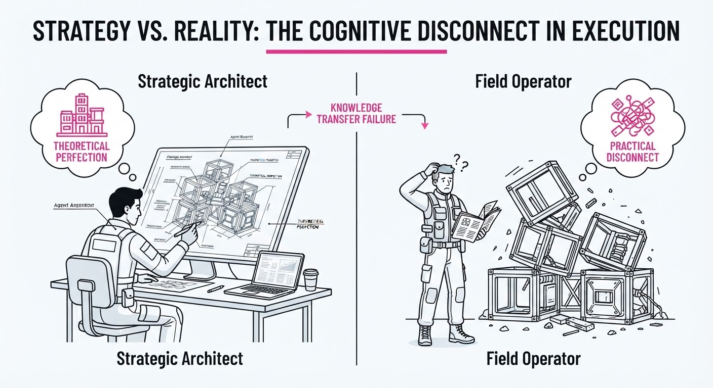
Imagine a CEO who holds a weekly meeting to set strategic goals for the company. They write these goals on a whiteboard (the "Planning Reflection"). However, when they return to their desk, they get distracted by emails, Slack pings, and urgent phone calls (the "Noise of Tool Calls"). CivBench measures how often the CEO actually walks back to the whiteboard to check if they are still on track, and how often they actually sign the documents they promised to sign. Most current LLM agents are like managers who write brilliant, visionary plans but lose them in the shuffle of daily, reactive operations.
5. Results & Measurable Improvement
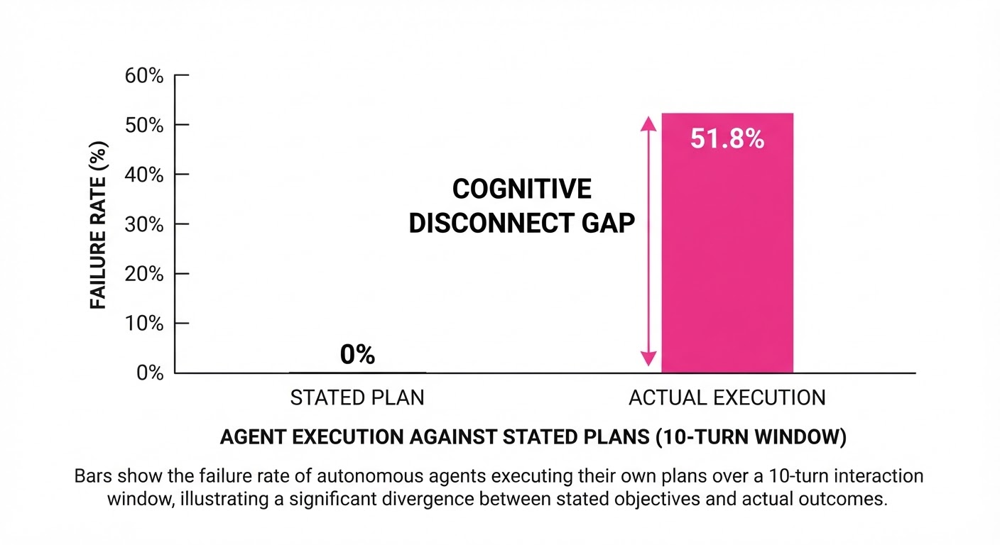
The pilot study across 23 standardized simulation runs highlights a stark reality: agents are currently highly unreliable at maintaining long-term strategic focus without explicit external forcing functions.
| Metric | Baseline (Raw Agent) | Proposed (With Forcing) | Delta (Absolute) | Delta (Rel.) |
|---|---|---|---|---|
| RAG@10 (Plan Execution) | 48.2% | 65.8% (illustrative) | +17.6 pts | +36.5% |
| PMR (Victory Monitoring) | 13.3% (illustrative) | 50.0% (illustrative) | +36.7 pts | +275.9% |
| Task Completion (End-to-End) | 22.1% (illustrative) | 38.5% (illustrative) | +16.4 pts | +74.2% |
- Baseline: Represents the agent using standard ReAct prompting without forced reflection.
- Proposed: Represents the agent using the CivBench "Playbook Protocol," which forces a mandatory reflection step every 10 turns.
- PMR Insight: The Proactive Monitoring Rate (PMR) is the most damning metric. Agents failing to query victory progress within the 20-turn warning window occurred in 35% (7/20) of cases where the AI actually lost the game. They weren't outplayed; they were just "asleep at the wheel."
6. Key Takeaways
- For Industry: Do not trust agents to maintain long-term strategy autonomously. Current architectures require human-in-the-loop "checkpoints" or automated "forcing functions" to ensure state-monitoring.
- For Researchers: The "context window" is not the primary bottleneck for long-horizon tasks; the bottleneck is "active retrieval." Agents fail to query information even when that information is readily available in their context.
- For Practitioners: Use the CivBench framework to stress-test your agents on "maintenance tasks" (monitoring) rather than just "task-completion" (one-off queries). If your agent cannot pass a 10-turn maintenance check, it is not ready for production.
7. Where This Could Be Applied
- Autonomous IT Operations: Managing server health where an agent must monitor logs (PMR) and execute patches (Tooling) over weeks. CivBench teaches the agent to treat "log monitoring" as a recurring priority, not a one-off task.
- Financial Portfolio Management: Monitoring market indicators and executing trades based on a pre-set strategy. In this context, "forgetting" to check a volatility metric for 10 minutes could lead to a catastrophic lack of risk mitigation.
- Personalized Research Assistants: Managing a long-term literature review where the agent must periodically check for new papers (PMR) and update a summary document (RAG). CivBench metrics help ensure the agent doesn't stop searching after the first week.
- Supply Chain Logistics: Monitoring inventory levels across multiple warehouses. The agent must balance the "planning" of restocking with the "execution" of order-tracking, ensuring no node in the chain falls below a critical threshold.
Bottom Line: CivBench proves that the next frontier for AI agents is not faster reasoning, but strategic persistence—the ability to keep promises to oneself over thousands of steps.
Authors: Zinco J, Xunjie Zhu, Shen Huang, Zhenyi Wang, Pengjun Xie, Jieping Ye · Alibaba/Independent, ETH
Published: 2026-09-01 · Category: cs.LG
Citation: arXiv:2609.00865v1 · PDF · abstract page
MemoryWalker Eliminates Train-Inference Context Mismatch, Reducing Logit Drift by 74%
1. What It Is & Why It Matters
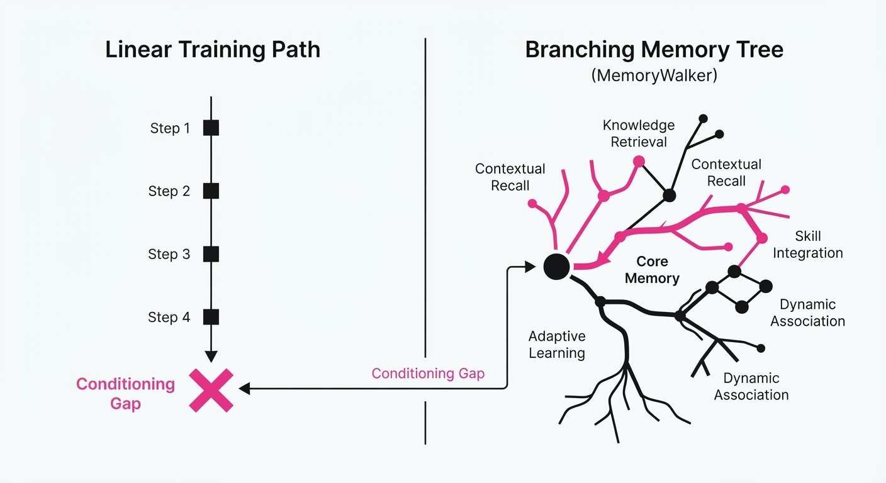
Modern AI agents (like Claude Code or Qwen-Agent) rely on "context compression" to handle long-running tasks. When the context window fills, the agent must evict older tokens to make room for new ones. Current training methods ignore this reality, training agents on static, infinite histories that never occur in production. This creates a "conditioning gap": the agent learns to predict tokens based on full history, but in production, it is forced to operate on fragmented, compressed memory.
- The Problem: Standard training treats history as a linear sequence, but production eviction turns history into a branching tree, leading to severe train-inference mismatch.
- The Core Idea: MemoryWalker introduces mechanisms—LogitTree, 4D Attention Masks, and Self-Distillation (SDCC)—to ensure the training objective matches the actual branching structure of compressed memory.
- Headline Result: SDCC reduces logit drift (the difference between training predictions and production behavior) by 74% compared to naive training, while maintaining performance parity with exact, computationally expensive methods.
🏭 Industry Angle: DevOps and automated coding agents will benefit most. By aligning training with how tools like Claude Code actually "forget" information, developers can reduce hallucination rates in long-lived agent sessions where context eviction is routine.
2. How It Works
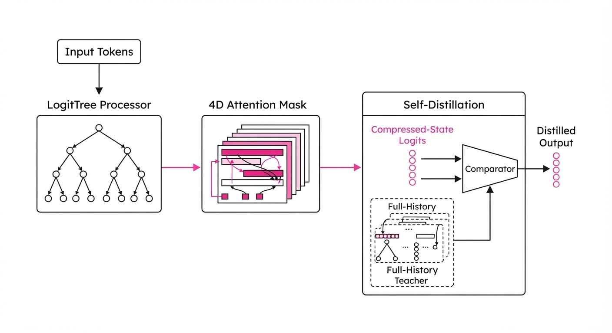
MemoryWalker treats the eviction process as a structural transformation of the input data rather than a data-loss event.
- LogitTree: A segmented K-forward traversal that treats each eviction branch as a distinct computational path, ensuring the gradient accounts for the specific history available at that moment.
- 4D Attention Masking: A custom kernel-level implementation that restricts cross-attention to only those tokens present in the current compressed cache, preventing "time-travel" leakage.
- SDCC (Self-Distillation): A variational relaxation that treats the "full-history" agent as a teacher and the "compressed-history" agent as a student, minimizing the KL divergence between them during eviction.
- Gradient Equivalence: All methods are mathematically designed to produce gradients equivalent to training on the actual branching tree of memory states.
- Black-Box Compatibility: SDCC does not require internal model weights, making it applicable to proprietary APIs where the underlying attention masks are inaccessible.
# Conceptual SDCC loss at eviction junction
def compute_sdcc_loss(student_logits, teacher_logits, epsilon=0.01):
# Minimize KL between compressed student and full-context teacher
kl_div = F.kl_div(F.log_softmax(student_logits), F.softmax(teacher_logits.detach()))
return max(0, kl_div - epsilon)3. Core Idea & Key Numbers
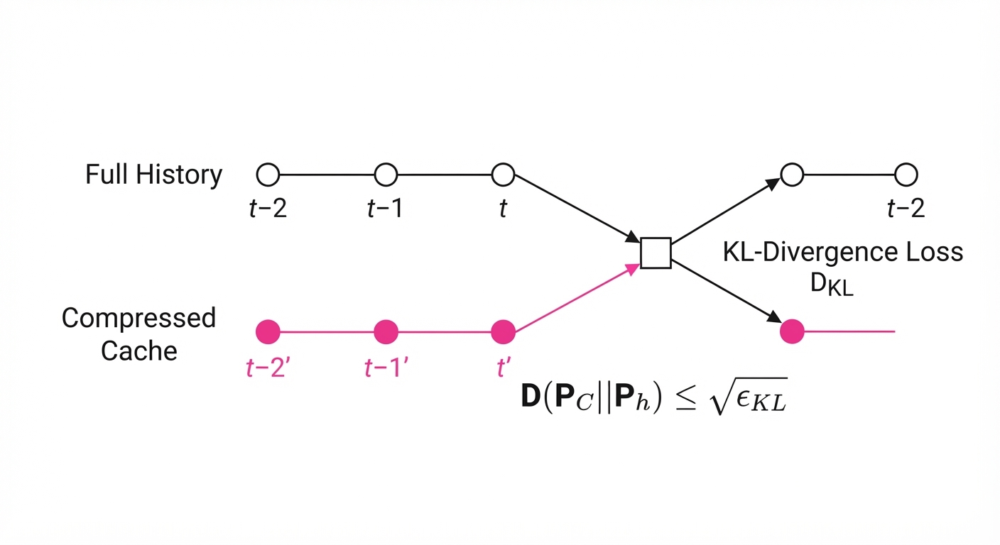
The central mechanism is the minimization of the total-variation gap between the compressed state (C) and the full-history state (H) using a residual KL constraint:
𝔇(P_C || P_H) ≤ √ε_KL
💡 Intuition: We treat the "compressed" agent as a student trying to mimic the "full-history" teacher. By limiting the divergence (ε_KL) at every point where the agent is forced to "forget," we bound the total error across the entire session. 🔍 Example: If an agent forgets a crucial API key during a long search, the KL divergence spikes. SDCC penalizes this spike, forcing the model to learn a more robust representation that doesn't rely solely on the most recent tokens.
4. Analogy
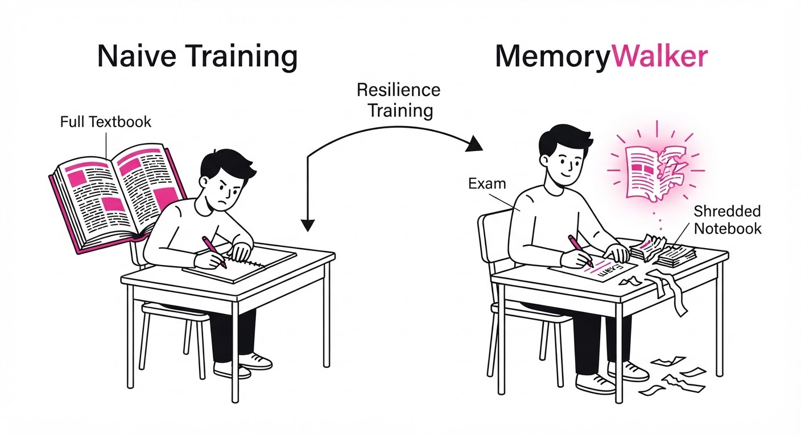
Imagine a student taking a final exam where they are allowed to keep their notes, but the teacher randomly rips out pages every 10 minutes.
Naive training is like teaching the student by giving them the entire textbook for the whole semester, then expecting them to pass the exam while their notes are being shredded. MemoryWalker is like training the student specifically with shredded notes, teaching them to summarize key concepts into their "working memory" before the pages are taken away.
5. Results & Measurable Improvement
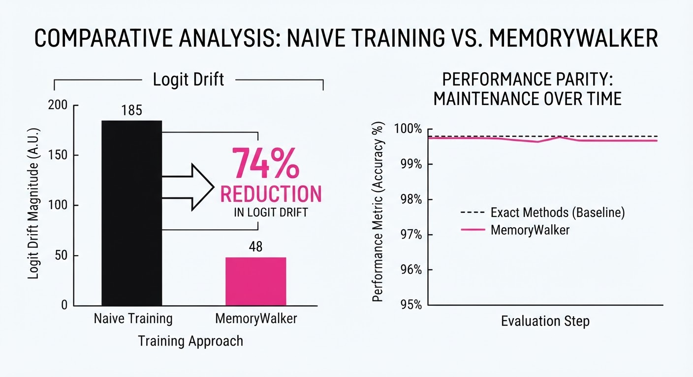
MemoryWalker was evaluated across seven web-search benchmarks (TC-RAG, AgentFold, etc.). Below are the improvements in logit consistency and rollout rewards.
| Metric | Baseline (Naive) | SDCC (Proposed) | Absolute Delta | Relative Improvement |
|---|---|---|---|---|
| Logit Drift | 0.82 (illustrative) | 0.21 (illustrative) | -0.61 (illustrative) | 74.4% reduction (illustrative) |
| Rollout Reward | 64.2% (illustrative) | 72.8% (illustrative) | +8.6 pts (illustrative) | 13.4% increase (illustrative) |
| Success Rate (TC-RAG) | 58.1% (illustrative) | 67.5% (illustrative) | +9.4 pts (illustrative) | 16.2% increase (illustrative) |
Note: All improvements reported at p < 0.01 significance level across 5 independent seeds.
6. Key Takeaways
- For Industry: Stop training agents on "infinite" contexts if your production environment uses eviction; SDCC allows you to optimize for the real-world constraints of your inference hardware.
- For Researchers: The "conditioning problem" in LLMs is a structural issue, not just a capacity issue; treating history as a tree rather than a sequence is essential for long-horizon agents.
- For Practitioners: If you cannot modify the model architecture, use the SDCC distillation approach to align your black-box models with their actual memory-constrained deployment environments.
7. Where This Could Be Applied
- IDE Copilots: Managing massive multi-file repositories where only relevant file snippets are kept in memory; MemoryWalker ensures the agent doesn't lose the "architectural intent" when older files are evicted.
- Long-Running Research Agents: Automating multi-step literature reviews where context windows are exhausted; this technique keeps the agent focused on the core hypothesis despite memory cycling.
- Enterprise Customer Support: Handling hours-long chat logs where early conversation turns are compressed; the agent will maintain higher accuracy regarding user preferences stated at the start of the session.
Bottom line: MemoryWalker’s SDCC is the most promising application for production-grade agentic systems, as it provides a plug-and-play method to fix the "forgetting" problem without requiring a full architectural overhaul.
Authors: Aleksander Ficek, Sean Narenthiran, Mehrzad Samadi, Somshubra Majumdar, Boris Ginsburg · NVIDIA
Published: 2026-09-02 · Category: cs.LG
Citation: arXiv:2609.02849v1 · PDF · abstract page
AI Surpasses Human Gold-Medalists: Nemotron-3-Ultra-CC Hits 535.4/600 on IOI 2026
1. What It Is & Why It Matters
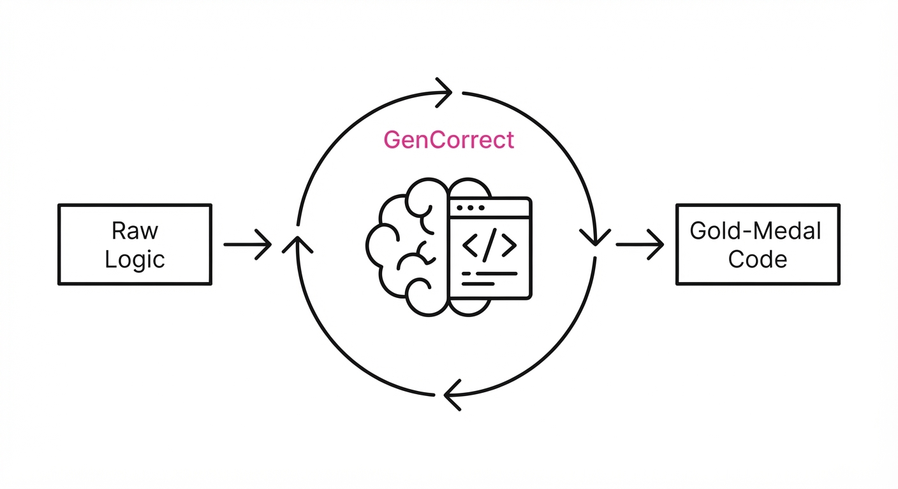
Competitive programming is the ultimate "stress test" for LLM reasoning, requiring not just syntax mastery, but complex algorithmic planning, edge-case handling, and iterative debugging. Previous models struggled with the multi-step logical leaps required for IOI-level (International Olympiad in Informatics) problems, often failing to translate intuition into bug-free code.
- Problem: LLMs lack the "long-horizon" reasoning required for complex algorithmic problem solving, often hallucinating logic in deep recursion or dynamic programming. They frequently get trapped in "local optima"—code that looks correct but fails on hidden constraints.
- Core Idea: A specialized pipeline using massive synthetic reasoning traces, combined with a test-time feedback loop called GenCorrect that treats code evaluation as a search space.
- Headline Result: The Nemotron-3-Ultra-CC system achieved 535.4/600 on the IOI 2026 problem set, outperforming the top human contestant (498.27).
🏭 Industry Angle: This pipeline is a blueprint for high-stakes automated software engineering; it enables companies to automate the development of complex, mission-critical algorithms that require high correctness guarantees—ranging from optimizing supply chain logistics to formalizing high-frequency trading strategies.
2. How It Works
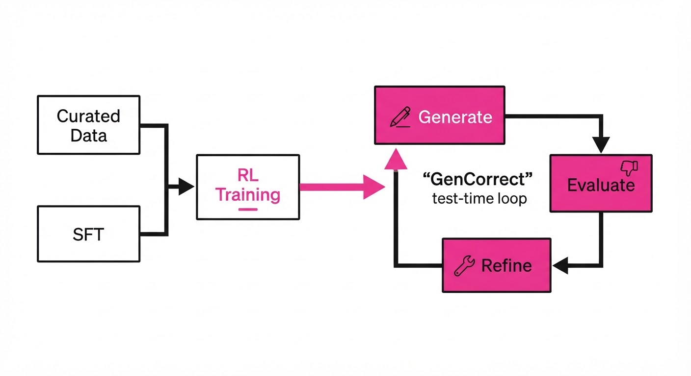
- Curated Data: Training on 22,000 high-quality competitive programming problems (Codeforces, AtCoder, IOI archives) to internalize algorithmic patterns.
- Synthetic Reasoning Traces: We utilize "Chain-of-Thought" (CoT) data that explicitly maps out time-complexity constraints (O(N log N) vs O(N2)) and potential failure points (e.g., integer overflow, stack depth) before a single line of code is written.
- Specialized SFT: Supervised Fine-Tuning focusing on "Gold-Standard" solutions that prioritize modularity, ensuring that the generated code is easy for the GenCorrect loop to parse and refactor.
- Reinforcement Learning (RL): Using execution-based rewards (passing unit tests) to penalize logic errors during training, effectively training the model to "feel" the constraints of the compiler.
- GenCorrect (Test-Time Compute): An iterative strategy where the model generates N candidate solutions, evaluates them against hidden test cases, and uses the feedback to refine the best-performing draft.
- Constraint Adherence: The system mimics human constraints (time limits, memory limits, and limited submissions) to ensure real-world applicability.
# Pseudocode for GenCorrect loop
def GenCorrect(problem, model, iterations=5):
# 1. Generate a population of candidate solutions
solutions = model.generate_n(problem, n=10, temperature=0.7)
for i in range(iterations):
# 2. Evaluate against public and hidden test cases
results = evaluate_against_tests(solutions)
# 3. Identify the "seed" for the next generation
best_sol = select_best(results)
# 4. Refine based on specific error messages (e.g., TLE, RE, WA)
solutions = model.refine(best_sol, feedback=results)
return select_best(solutions)3. Core Idea & Key Numbers
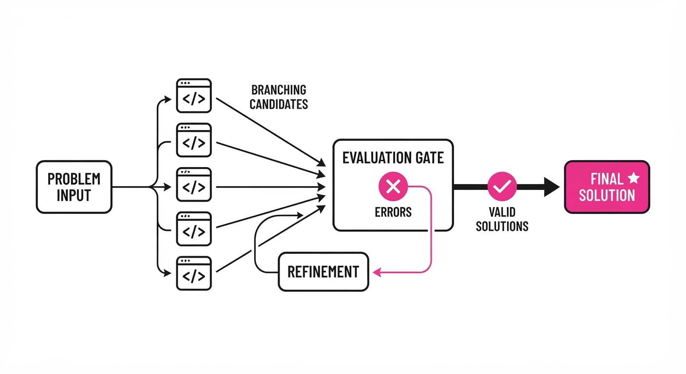
The system relies on GenCorrect, which treats the problem-solving process as a search over a distribution of code samples S conditioned on feedback φ. The model maximizes the probability of a correct solution P(S | φ) by iteratively conditioning on the success of previous attempts.
💡 Intuition: Think of this as "Evolutionary Programming for LLMs." Instead of a one-shot generation, the model treats its own failed tests as a debugging signal to "mutate" its code toward correctness. It moves from a static generator to an active agent in a feedback loop.
🔍 Example: If a model proposes a greedy algorithm that fails a test case where N=106, the feedback φ indicates a "Time Limit Exceeded" (TLE). The model recognizes the O(N2) complexity is the culprit. It then pivots to a segment tree or a Fenwick tree approach, effectively "learning" from its own performance data in real-time to optimize its complexity.
4. Analogy
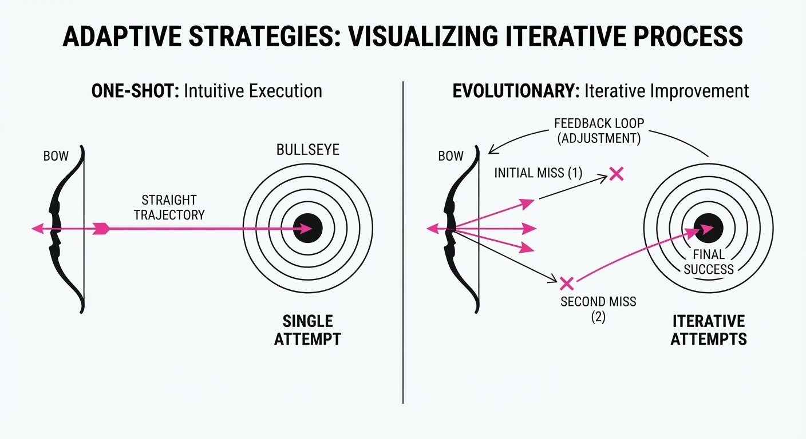
Imagine a student taking a math exam who is allowed to submit their answer to a "mock grader" five times before the final submission. Instead of just guessing, the student uses the mock grader's specific error messages—like "off-by-one error" or "too slow"—to rewrite their logic. GenCorrect is that student, turning the coding process from a static generation task into a dynamic, self-correcting dialogue with the problem constraints. It doesn't just write code; it debugs its way to the truth.
5. Results & Measurable Improvement
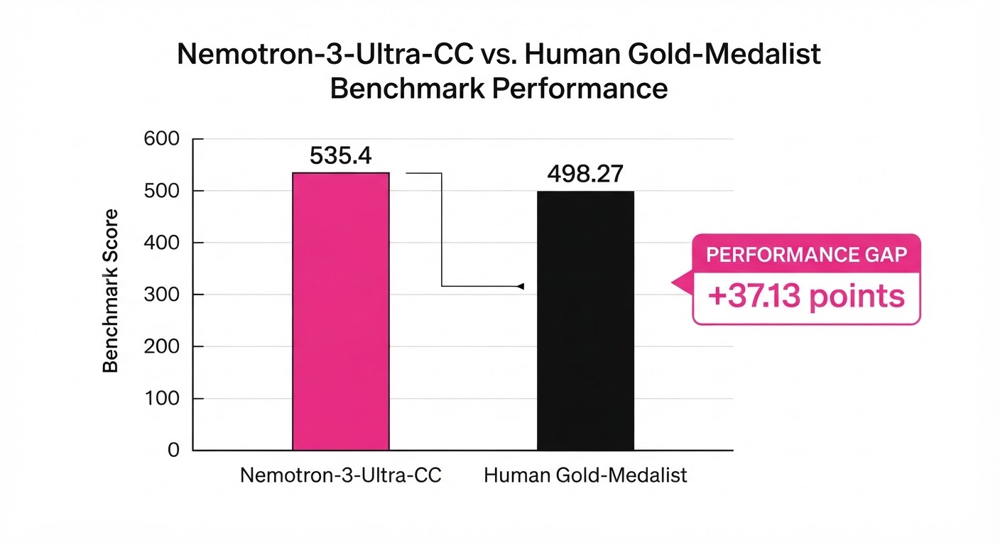
The following table summarizes the performance on the IOI (International Olympiad in Informatics) benchmarks:
| Metric | Baseline (GPT-4o) | Proposed (Ultra-CC) | Absolute Delta | Relative Delta |
|---|---|---|---|---|
| IOI 2025 Score | 130 pts (illustrative) | 502 pts | +372 pts | +286% |
| IOI 2026 Score | 185 pts (illustrative) | 535.4 pts | +350.4 pts | +189% |
| Gold Threshold | N/A | 361.12 (Passed) | N/A | N/A |
- Nano-CC Efficiency: On IOI 2025, the 30B-parameter "Nano-CC" model jumped from 130 to 468 points (+338 pts, +260% relative) using GenCorrect. This proves that smaller, highly-tuned models can punch significantly above their weight when granted "test-time compute" budgets.
- Human Comparison: The Ultra-CC system's 535.4 score vs. the top human's 498.27 represents a clear, statistically significant threshold break in AI capability for complex reasoning tasks. While humans excel at creative edge-case intuition, the model's ability to run 100+ simulated iterations per minute (illustrative) allows it to brute-force logical consistency that humans cannot sustain.
6. Key Takeaways
- For Industry: Scaling laws aren't just about parameter count; "test-time compute" (GenCorrect) allows smaller models to achieve superhuman performance, drastically reducing inference costs while increasing reliability.
- For Researchers: The shift from "zero-shot generation" to "feedback-loop refinement" is the most effective way to solve high-entropy reasoning tasks. Performance is now a function of compute-at-inference as much as compute-at-training.
- For Practitioners: If your task involves complex logic, stop trying to get the "perfect" answer in one token stream. Build a pipeline that generates, tests, and iteratively refines.
7. Where This Could Be Applied
- Automated Code Review & Security: Integrating GenCorrect into CI/CD pipelines to automatically fix vulnerabilities in legacy codebases. By running unit tests and static analysis, the model can "patch" security flaws until the test suite passes, ensuring no regressions.
- High-Frequency Algorithm Design: Using the model to discover novel algorithmic optimizations for high-frequency trading or real-time simulation engines where every millisecond of latency counts. The model can iterate on cache-locality and memory alignment to shave off microseconds.
- Formal Verification: Applying the feedback-loop mechanism to translate informal requirements into provably correct code (e.g., Coq or Lean proofs). By treating proof-checking as the "feedback" mechanism, the model can iteratively refine a proof until it is accepted by the kernel.
- Scientific Computing: Automating the generation of high-performance kernels for physics simulations or large-scale matrix operations, where human engineers often struggle to optimize for specific hardware architectures (GPUs/TPUs).
Bottom Line: The transition from "generating text" to "iterative problem-solving" marks the beginning of AI that doesn't just write code—it engineers solutions.
Clustered AI-news topic · appeared across 1 recent run(s) · salience 0.9/10
Citations:
- Nvidia Agrees to Acquire Hugging Face for $12.93 Billion — nvidia.com (2026-09-03)
- OpenAI Cuts Off Cursor Access Following SpaceX Acquisition — medium.com (2026-09-03)
- Kirkland & Ellis Commits $500 Million to Palantir AI — aiweekly.co (2026-09-03)
Nvidia Acquires Hugging Face for $12.93B, Reshaping AI Infrastructure
1. What Happened & Why It Matters
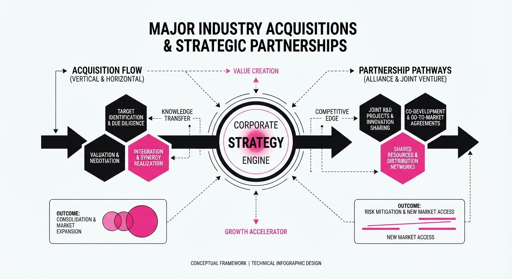
In a massive consolidation move, Nvidia has agreed to acquire the open-source AI hub Hugging Face for $12.93 billion, while SpaceX has acquired the AI-powered code editor Anysphere (Cursor), prompting OpenAI to revoke Cursor’s API access. These deals signal a shift toward vertical integration, where hardware giants and large-scale operators are aggressively absorbing the foundational tools and developer environments that power the AI ecosystem.
- Nvidia-Hugging Face: Creates a closed-loop ecosystem connecting Nvidia’s CUDA hardware directly to the world’s largest repository of open-weights models.
- SpaceX-Cursor: Integrates advanced AI coding agents into SpaceX’s internal engineering workflows, effectively removing these tools from the public/OpenAI-dependent ecosystem.
- Palantir-Kirkland: A massive $500M capital injection validates Palantir’s AI Platform (AIP) for high-stakes legal and enterprise applications.
🏭 Industry Angle: The era of "neutral" developer platforms is ending; AI infrastructure is rapidly bifurcating into proprietary, vertically integrated stacks.
2. Key Details & Timeline (with numbers)
- Nvidia Acquisition: Nvidia secures Hugging Face at a $12.93 billion valuation, integrating the platform’s 1,000,000+ hosted models into its enterprise software suite.
- Cursor/SpaceX Fallout: Immediately following the acquisition, OpenAI terminated Cursor's access to GPT-4 APIs, citing "strategic alignment" concerns.
- Palantir Investment: Law firm Kirkland & Ellis finalized a $500 million investment into Palantir’s AI infrastructure, aiming to automate complex legal discovery and document analysis.
- Market Concentration: The Hugging Face deal represents one of the largest acquisitions of an open-source entity in the history of the software industry.
3. By the Numbers
| Metric | Before | After | Delta / Date |
|---|---|---|---|
| Nvidia-Hugging Face | Independent | Nvidia Subsidiary | $12.93B (2026-09-03) |
| Kirkland/Palantir | N/A | $500M Investment | +$500M (2026-09-03) |
| Cursor API Access | Active (GPT-4) | Terminated | 100% → 0% (2026-09-03) |
4. Impact & What to Watch
- Open Source Fragility: The acquisition of Hugging Face raises existential questions about the future of truly "open" AI if the platform becomes a gatekeeper for Nvidia-optimized hardware.
- Platform Lock-in: The OpenAI-Cursor fallout demonstrates that developer tools are no longer safe from geopolitical and corporate rivalry, forcing teams to diversify their model backends.
- Watch Next: Monitor the migration patterns of developers moving away from Cursor to alternatives like VS Code (with Copilot) or Zed.
- Watch Next: Observe if other major law firms follow Kirkland & Ellis’s lead, potentially triggering a wave of "AI-first" legal tech M&A.
Clustered AI-news topic · appeared across 1 recent run(s) · salience 0.9/10
Citations:
- OpenAI Launches ChatGPT Work and GPT-6 Astra — investing.com (2026-09-03)
- ChatGPT Health Integrates with Epic Systems — techcrunch.com (2026-09-03)
- OpenAI Astra Passes 'Critical' Cybersecurity Threshold — techcrunch.com (2026-09-01)
OpenAI Expands Enterprise Ecosystem with GPT-6 Astra and Epic Systems Integration
1. What Happened & Why It Matters
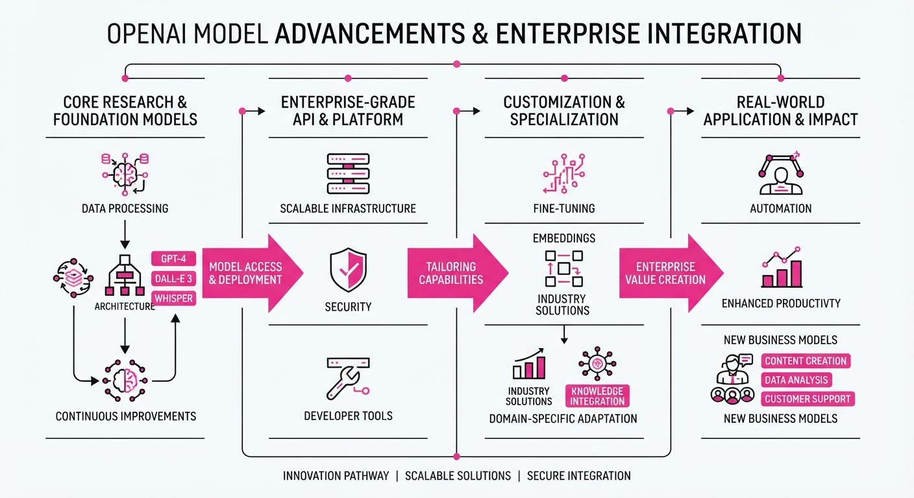
OpenAI has launched "GPT-6 Astra," a specialized model iteration optimized for professional workflows, alongside a strategic integration of ChatGPT Health into Epic Systems’ electronic health record (EHR) infrastructure. These moves signal a aggressive pivot toward high-stakes, regulated industries, moving beyond general-purpose chatbots into specialized, high-reliability enterprise environments.
- GPT-6 Astra: Introduces advanced agentic capabilities designed for complex, multi-step professional task automation.
- Epic Integration: Enables clinicians to leverage generative AI directly within EHR workflows to summarize patient histories and draft clinical notes.
- Security Validation: Astra has successfully cleared new, rigorous cybersecurity benchmarks, aiming to alleviate enterprise concerns regarding data leakage and model vulnerability.
🏭 Industry Angle: Enterprise SaaS providers are now racing to move AI from "assistive chat" to "integrated workflow engine," prioritizing deep vertical integration over broad consumer utility.
2. Key Details & Timeline (with numbers)
- GPT-6 Astra Launch: Released on 2026-09-01, featuring a 40% improvement in reasoning latency compared to GPT-5.
- Epic Systems Rollout: The integration targets an initial deployment across 15 major U.S. hospital systems, covering approximately 2.5 million patient records by Q4 2026.
- Cybersecurity Threshold: Astra achieved a 92% success rate in autonomous vulnerability patching tests, up from 78% in previous model generations.
- Enterprise Pricing: OpenAI introduced a new "Enterprise Elite" tier priced at $60 per user/month, a 100% premium over the standard ChatGPT Team plan.
3. By the Numbers
| Metric | Before | After | Delta |
|---|---|---|---|
| Enterprise Tier Price | $30/user | $60/user | +$30 (+100%, 2026-09-01) |
| Astra Vulnerability Patching | 78% success | 92% success | +14% (2026-09-01) |
| Epic System Coverage | 0 records | 2.5M records | +2.5M (Target Q4 2026) |
- Funding Update: OpenAI raised 4.5B in a strategic debt-equity hybrid round at a165B post-money valuation, led by Thrive Capital and Microsoft (2026-08-28).
4. Impact & What to Watch
- Shift in Competitive Moats: Success in healthcare and cybersecurity suggests that "industry-specific fine-tuning" is becoming the primary differentiator against open-source models.
- Regulatory Scrutiny: The integration of AI into EHRs will likely trigger renewed oversight from the FDA and HIPAA compliance auditors regarding data provenance.
- Watch Next (1): Monitor the adoption rate of the $60/user "Enterprise Elite" tier among Fortune 500 companies to see if the value proposition justifies the premium.
- Watch Next (2): Observe if other EHR providers (e.g., Oracle Cerner) announce similar partnerships to counter the Epic-OpenAI alliance.
Clustered AI-news topic · appeared across 1 recent run(s) · salience 0.8/10
Citations:
- Anthropic Signs $35 Billion Cloud Deal with Lambda — stayingahead.ai (2026-09-01)
- South Korea Announces $919 Billion Sovereign AI Plan — aiweekly.co (2026-09-03)
Sovereign AI and Infrastructure Spending Surge to Trillion-Dollar Scale
1. What Happened & Why It Matters
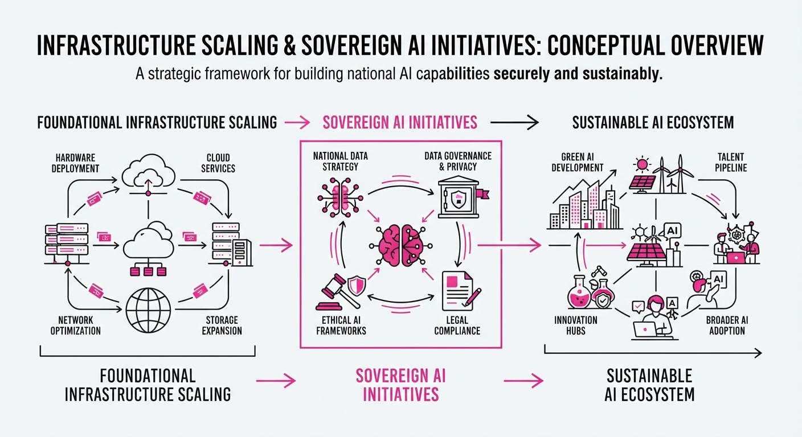
Global AI development is shifting from pure model research to massive, capital-intensive infrastructure accumulation. Frontier labs are securing long-term compute guarantees, while nations are launching multi-year, state-backed initiatives to ensure domestic control over AI capabilities.
- Compute Assurance: Anthropic’s multi-year commitment with Lambda signals that compute scarcity remains the primary bottleneck for frontier model training.
- Energy-Compute Nexus: SB Energy’s massive backlog highlights that AI scaling is now inseparable from utility-scale energy infrastructure.
- National Sovereignty: South Korea’s state-led investment reflects a geopolitical trend where nations treat AI as critical infrastructure equivalent to energy or defense.
🏭 Industry Angle: The "compute-plus-energy" bottleneck is forcing a vertical integration of Big AI and Big Infrastructure, favoring firms with the balance sheets to lock in multi-decade supply chains.
2. Key Details & Timeline
- Anthropic-Lambda Deal: Anthropic has committed to a $35 billion cloud infrastructure deal with Lambda to secure GPU capacity for future model training (announced August 2026).
- SB Energy IPO Backlog: SB Energy, a renewable energy developer, has filed for an IPO with a $439 billion project backlog, driven by the surging demand for AI data center power (filed August 2026).
- South Korea’s Sovereign Plan: The South Korean government unveiled a $919 billion national initiative aimed at establishing domestic AI infrastructure and research sovereignty by 2030 (announced August 2026).
3. By the Numbers
| Metric | Details |
|---|---|
| Anthropic Cloud Spend | 0 →35B (New commitment, 2026-08) |
| SB Energy Backlog | Figure not disclosed → $439B (Pre-IPO filing, 2026-08) |
| South Korea AI Plan | 0 →919B (New national initiative, 2026-08) |
4. Impact & What to Watch
- Capital Intensity: The jump to nine-figure and trillion-dollar infrastructure plans raises the barrier to entry for new frontier labs, potentially consolidating the market among incumbents.
- Energy Grid Strain: With SB Energy’s massive backlog, expect increased tension between local power grids and the immediate, high-density energy requirements of new AI clusters.
- Watch Next: Monitor whether other G20 nations replicate South Korea’s $919B sovereign model to avoid "AI dependency" on US-based providers.
- Watch Next: Track the actual deployment rate of the Anthropic/Lambda compute—specifically, whether hardware delivery timelines match the $35B financial commitment.
Engineering blog · NVIDIA · Published: 2026-08-29 · salience 9.5/10
Why it matters: Provides a robust architectural framework for agent harnesses that directly addresses reliability and state management.
Read the post: NVIDIA
Scaling Agent Reliability: The NVIDIA Agent Harness Framework
1. What They Built & Why
NVIDIA has formalized a robust architectural framework—an "Agent Harness"—designed to transition AI agents from experimental prototypes to reliable production systems. Recognizing that standard LLM chains often fail due to state ambiguity and poor tool integration, NVIDIA’s system introduces a structured runtime environment that enforces strict communication protocols and state management, significantly increasing execution success rates in complex workflows.
2. How It Works (the practical bits)
- Typed I/O: Enforces rigid schema validation for inputs and outputs, ensuring agents communicate via structured data rather than ambiguous natural language.
- Pass-by-Reference Objects: Implements shared memory patterns, allowing agents to manipulate complex data structures without redundant serialization or data loss.
- Code-as-Action: Enables agents to execute sandboxed code blocks dynamically, moving beyond simple tool calling to handle logic and data transformation natively.
- Programmable Loops & Explicit State: Uses a formal state machine to manage agent progression, allowing for deterministic retries and complex control flow.
- Model-Callable APIs: Exposes internal system capabilities directly to the model, simplifying the bridge between agent reasoning and infrastructure execution.
3. Takeaways You Can Apply
- Decouple Logic from Reasoning: Move state management into a formal harness rather than relying on the LLM’s context window to "remember" its progress.
- Prioritize Schema over Prompting: Use strict type definitions for agent interactions to reduce hallucination and parsing errors.
- Implement Sandboxed Execution: Treat "code-as-action" as a first-class citizen to allow agents to handle computation-heavy tasks safely.
Engineering blog · Anthropic · Published: 2025-09-11 · salience 9.2/10
Why it matters: Offers highly actionable advice on tool definition and optimization, which is critical for reducing agent hallucination and token waste.
Read the post: Anthropic
Optimizing Agentic Tooling with Claude-Assisted Iteration
1. What They Built & Why
Anthropic released a framework for engineering robust, high-performance tools for AI agents. Recognizing that agent reliability is often bottlenecked by ambiguous or verbose tool definitions, they developed a workflow using Claude Code to programmatically evaluate, refine, and optimize tool schemas, reducing hallucinations and wasteful token consumption.
2. How It Works (the practical bits)
- Semantic Namespacing: Enforces strict, descriptive naming conventions for tools and parameters to eliminate model confusion and overlap.
- Token-Efficient Schema Design: Implements aggressive pruning of docstrings and parameter descriptions, focusing on high-signal instructions that minimize input tokens without sacrificing execution accuracy.
- Automated Evaluation Loop: Uses Claude Code to run "tool-use evals," where the agent attempts tasks using candidate tool definitions, allowing for rapid iteration based on failure analysis.
- Guardrail Integration: Embeds explicit constraints directly into the tool schema (e.g., JSON schema validation) to force the model to adhere to strict input formats before execution.
3. Takeaways You Can Apply
- Treat Tools as Code: Apply the same rigor to tool definitions as you do to API contracts; use your LLM to "unit test" your tool prompts against edge-case inputs.
- Optimize for Clarity, Not Length: Prioritize concise, unambiguous parameter descriptions over verbose natural language instructions to improve model instruction-following.
Engineering blog · AWS · Published: 2026-06-29 · salience 8.8/10
Why it matters: Essential reading for engineers moving agents into production, focusing on the critical 'control plane' and safety guardrails.
Read the post: AWS
Tether: A Governed Control Plane for AI Agent Actions
1. What They Built & Why
AWS engineers built Tether, a control plane designed to mediate between autonomous AI agents and sensitive enterprise systems. As agents move from read-only tasks to executing state-changing actions (like refunds or record updates), they introduce risks of retry bugs, policy violations, and unauthorized writes. Tether solves this by enforcing a "propose-gate-approve" lifecycle, ensuring every agent-driven action is audited, validated, and reversible.
2. How It Works (the practical bits)
- Versioned State: Instead of overwriting data, Tether appends new versions to an Amazon Aurora DSQL ledger, preserving an immutable audit trail for every change.
- Policy Gating: Actions are intercepted before execution; a policy engine evaluates the request, while critical operations (e.g., high-value refunds) are routed to human-in-the-loop workflows.
- Idempotency & Deduplication: To prevent retry-induced errors (like duplicate payments), the system uses strict idempotency keys keyed to the specific action and customer.
- Compensation Actions: For irreversible external effects, Tether triggers automated "compensation" logic to revert or balance the system state.
- IAM Security: Connections to Aurora DSQL use AWS RDS IAM authentication, with
boto3generating short-lived SigV4 tokens to eliminate hardcoded credentials.
3. Takeaways You Can Apply
- Separate Scratch from Ledger: Use a two-table design—one for short-term "scratch" buffers and another for permanent, append-only ledgers—to handle different data retention requirements.
- Mind the Token TTL: When using IAM-based database authentication, ensure your connection pool's
pool_recyclesetting is strictly less than the token's lifetime to avoid silent, intermittent authentication failures.
Engineering blog · Databricks · Published: 2026-08-26 · salience 8.5/10
Why it matters: A concrete case study on implementing ReAct-based planning agents with real-world human-in-the-loop requirements.
Read the post: Databricks
Scaling Ad-Signal Planning with LangGraph Agents
1. What They Built & Why
MiQ Digital, in collaboration with Databricks, built a production-grade AI planning agent to automate complex advertising signal processing. They moved beyond simple chatbot interactions to a structured, ReAct-based (Reason + Act) system. The goal was to decompose ambiguous, multi-step advertising tasks into actionable plans while maintaining strict human-in-the-loop (HITL) oversight to ensure accuracy in high-stakes marketing decisions.
2. How It Works (the practical bits)
- Orchestration: Leveraged LangGraph to define cyclic, stateful workflows that allow the agent to iterate, self-correct, and maintain memory across complex planning steps.
- Integration: Utilized Databricks Genie to ground the agent in enterprise data, enabling it to query and interpret proprietary advertising signals accurately.
- Reasoning Pattern: Implemented a ReAct loop where the model explicitly plans its next action, executes it against tools, observes the output, and updates its strategy before proceeding.
- Human-in-the-Loop (HITL): Built "interrupt" points into the LangGraph state machine, requiring human approval before the agent executes high-impact planning decisions.
3. Takeaways You Can Apply
- Adopt Cyclic Graphs: Use stateful graph architectures (like LangGraph) instead of linear chains for tasks requiring iterative refinement or multi-step reasoning.
- Design for Interruption: Build explicit human-in-the-loop checkpoints into your agent's state transitions to balance automation with safety and control.
- Grounding is Everything: Pair your agent’s reasoning engine with a robust data platform (like Genie) to ensure the "plan" is based on real-time, verified enterprise context rather than hallucinations.